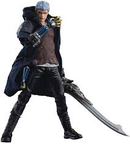
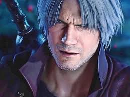
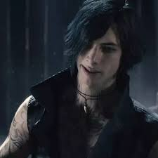

bem vindo hoje você vai aprender a jogar Devil may cry presta atenção.
"Devil May Cry" é uma série de jogos de ação e aventura desenvolvida pela Capcom, centrada nas aventuras de Dante, um caçador de demônios. A história começa com Dante, um meio-humano e meio-demônio, que busca vingar a morte de sua mãe e confrontar seu irmão, Vergil, que busca poder a qualquer custo.
A jogabilidade é marcada por combates intensos e acrobáticos, onde os jogadores usam uma combinação de armas de fogo e espada, além de habilidades demoníacas. Ao longo da série, Dante enfrenta uma variedade de demônios, criaturas sobrenaturais e outros antagonistas, enquanto explora temas de redenção, identidade e o conflito entre o bem e o mal.
Com um estilo visual único, uma trilha sonora impactante e uma narrativa rica, "Devil May Cry" se tornou um clássico no gênero hack and slash, influenciando muitos outros jogos e cultivando uma base de fãs dedicada.
Se liga no dripy do Hideki Kamiya OBS criador do jogo.
Se você vai jogar Devil may cry 5 você vai jogar com cerca de 3 personagens Dante Nero e o misterioso V. Nero tem uma espada que pode dar dano de fogo um braço mecanico que tem varias variaçoes que servem para combos
unicos é um revolver com 6 disparos.

O Dante ja e mais complexo você com ele tem ate 4 formas de combate que são sword master, que adiciona mais formas de combate com armas brancas, gun stlinger que adiciona mais formas de combate
com armas de fogo, trikcster que é um teleporte ou uma esquiva é por fim royal guard que lhe da uma defessa mas tambem serve como pary devolvendo parte de dano para o inimigo.

E por fim o misterioso V que e um feiticeiro ele invoca 3 sombras que lutam por ele mas por seu corpo ser muito fraco ele so invoca 2. Spoiler nesse jogo dante e morto e V se revela o grande vilão de Devil may cry 5.

Assista aqui alguns videos para saber como o jogo é.
Se você gostou do jogo clica nesse link aqui em baixo que ele vai té encaminhar para o instagran da capcom e peça pelo Devil may cry 6 que esta em ato faz 6 anos por favor.